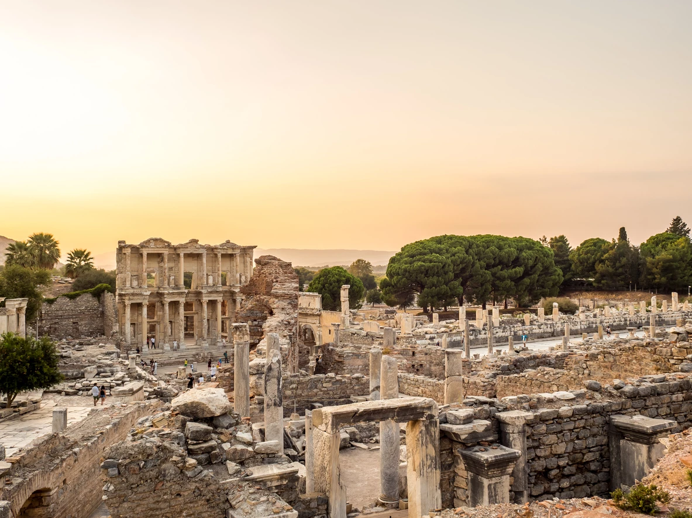
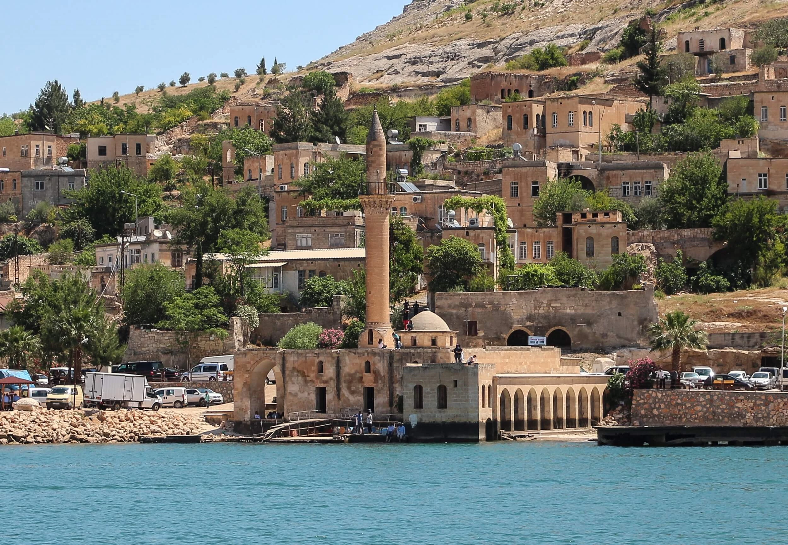
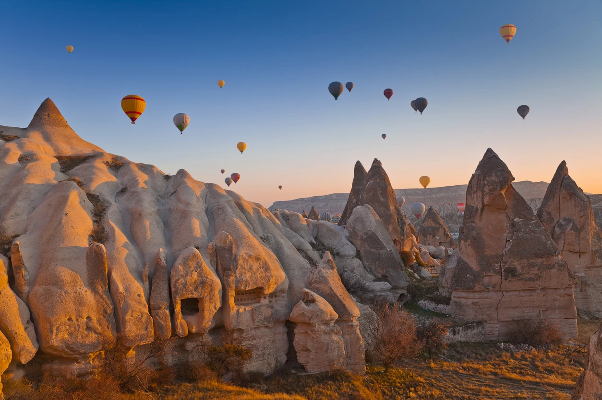

Güzel Atlar Ülkesi

Kalkolitik Çağ’dan beri devamlı yerleşim alanı olan Kapadokya, 8 köklü medeniyet ve 20’den fazla topluluğa kucak açmış. Tarihi gibi ismi de milattan öncesine dayanan Kapadokya, Persler döneminde "Katpatuka" adı ile anılmaya başlanmış. At yetiştirmeye elverişli bir bölge olması ve halkın bu konuya büyük bir önem vermesi ile ortaya çıkan "Katpatuka" kelimesi “Güzel Atlar Ülkesi” anlamını taşımakta.
Efes Antik Kenti
Efes Antik Kent, Türkiye’nin en önemli antik kentlerinden biri olmasının yanı sıra dünyanın yedi harikasından biri olan Artemis Tapınağı’nın da ev sahibi. Yüzyıllar boyunca yerleşim yeri olarak kullanılan Efes, tarihin en iyi kent planları arasında gösteriliyor. Tamamıyla mermerden yapılan antik kent, mimari yapıları ile de oldukça göz doldurucu. Her adımda tarihin kalıntılarına rastlayacağınız Efes Antik Kent’te Celcus Kütüphanesi, Antik Tiyatro, Kral Yolu, Meryem Kilisesi gibi görülmesi gereken birçok yapıt bulunuyor. İzmir’in Selçuklu ilçesinde bulunan Efes’i keyifli ve rahat bir şekilde gezmek isteyenler için en uygun zaman mayıs ve eylül arası.
Halfeti Gezi Rehberi
Şanlıurfa’nın ilçelerinden biri olan ve “Karagül Diyarı” olarak da bilinen Halfeti; kendine özgü mimari yapısı, doğal güzellikleri ve siyah gülleri ile Türkiye'nin önemli turizm noktalarından biridir. Fırat Nehri’nin kıyısında bulunan Halfeti neredeyse 3000 yıllık geçmişi ile saklı bir cennet olarak görülür. Önceden Rumkale olarak bilinen şehir Halil ve Fatma adındaki iki gencin kendini Fırat sularına bırakmasının ardından bu gençlerin adının kısaltmasını alarak Halfeti olarak anılmaya başlar.
Kapadokya Gezisi
Kapadokya; doğanın ve tarihin masalsı bir şekilde birleştiği, dünya üzerinde eşi benzerini bulamayacağınız hayranlık uyandıracak bir bölge. Erciyes, Hasan ve Göllü Dağı’ndan çıkan lavların yüzyıllar boyunca şekillendirmesi sonucunda oluşan peri bacalarına ev sahipliği yapan Kapadokya, birçok medeniyete de başkent olmuş. Yerli ve yabancı turistlerin “Seyahat edilecek yerler” listesinde olan Kapadokya aynı zamanda Türkiye’nin dünyaya açılmış kapısı niteliğinde.